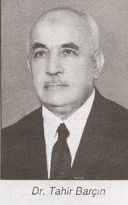

Dr. Tahir Barçýn [1906-1978]

1906'da Ermenek'te doðdu. 1935 senesinde Ýstanbul Üniversitesi Týp Fakültesini bitirdi. Viranþehir ve Emirdað'da uzun seneler hükûmet tabibliði yaptý. Emirdað'da Bediüzzaman'ýn doktorluðunu yaptý. ll Mayýs 1978'de Ýstanbul'da Allah'ýn rahmetine kavuþtu.
Þarkýn kapýsýný açtýn
Bitlis ve kazalarýna saðlýk müdürü olarak gidip, Orada vatan ve millete fedakârane hizmetler yaptý. Emirdað'ýn meyvesi olan Nur Risalelerini Bitlis'in kaza ve köylerine götürüp, daðýtmýþtý.
Üstad: "Þarkýn kapýsýný açtýn! Büyük hizmetlere medar oldun!" diye iltifat ve takdir etmiþti Dr. Tahir Beyin hizmetlerini...
Daha sonra yine Emirdað'a dönen Dr. Tahir Barçýn, burada vazifesine devam etmiþti..
Bahtiyar doktor
Emirdað Hükûmet Tabibi ve Ýskân Müdürü olan Dr. Barçýn, Üstad Bediüzzaman'ýn "Bahtiyar Doktor" iltifatýna erenlerdendi.
Emirdað'da Üstad'ýna doktorluk yapmýþtý. Bu vatanýn aziz bir evladý olan doktorumuz ayný zamanda hýfzýný da ikmal etmiþti, hafýzdý.
27 Mayýs Ýhtilalinde, diðer Emirdaðlý Nur arkadaþlarýyla birlikte, Nur kitaplarýný okuduklarý için tevkif edilmiþti. Bir müddet Bolvadin Hapishanesinde yatmýþ, sonra tahliye ve beraat etmiþti.
Daha sonraki senelerde Ýstanbul'un Zeytinburnu semtinde açtýðý muayenehanede doktorluk yapýyordu. Binlerce fakir fukarayý, çok ucuz ve parasýz olarak tedavi ediyordu. Bazý fakirlerin ilaç paralarýný da kendisi veriyordu.
Ani bir hastalýkla iki ay zarfýnda irfan ufkumuzdan çekilip kayboldu; týpký "gökteki yýldýzlar" gibi...
Cennete doðru kayan yýldýzlar
Nur dâvalarýnýn kahraman avukatý Bekir Berk'in "Yýldýz yaðmuru veya Cennetten gelen ses" baþlýklý makalesinde pek sevdiðim bir ifadesi vardý. Bu ifadeyle baþlamak istiyorum. Dr. Tahir Barçýn aðabeyle alâkalý hatýralara. Þöyle diyordu Nur'un avukatý:
".... Dostluk dünyamýzýn semasýndan yýldýzlar göçüyor ahirete doðru.... Yýldýzlar kayýyor Cennete doðru..."
Kur'ân semasýnýn berrak ve parlak bir yýldýzý, belki de kutup yýldýzý idi doktor aðabeyimiz. Ehl-i kemal idi, ehl-i ilimdi, ehl-i takva idi. Ýstiklal Marþý Þairimizin evi, iþte böyle bir zata nasip olmuþtu. Evi bir dershaneydi, iman dershanesi, Nur dershanesi... Nurlu Üstad, kadim dostu Âkif Beyin evini Tahir Beyin aldýðýný duyunca sevinmiþti.
Tahir Barçýn'ýn Bediüzzaman'ý ilk görüþü
Dr. Tahir Barçýn, Bediüzzaman Said Nursî'yi ilk defa Birinci Cihan Harbinin sonlarýnda, Ýstanbul'da gördüðünü þu þekilde anlatýyor:
"Ýlk mektebi köyümüz olan Sarýveliler'de bitirdim. Altý yaþýnda Ermenek'e geldim. Daha sonra iki sene Konya'da okudum. Ýstanbul'a geldiðimizde þehir iþgal altýndaydý. Aðustos ayýnda Ýstanbul'a geldiðimizden iki ay sonra Ekim'in 6'sýnda kurtuluþ oldu. O zamanki mekteplere kayýt olmuþtum. Ýbtidai hariç üçte idim. (Þimdiki Ýmam-Hatip'in üçüncü sýnýfýna muadil olmaktadýr.)
"Fatih Camiinin güney tarafýnda güreþ kulübü bulunmaktadýr. O zamanlar aðabeyim Mustafa Barçýn [1] ve Sedat Çumralý (Ýhtilâl sonrasý koalisyonlarýnýn adli ye vekillerinden) ile medresede talebe olarak okuyorlardý. o zamanki ifade ile sahýn iki'de idi aðabeyim. Sedat Çumralý ile oradaki medreselerde bir odada kalýyorlardý. Ben Sultanahmet'teki medreselerde kalýyordum. Bu medrese Sultanahmet türbesinin hemen bitiþiðindeydi. Bazý günler aðabeyimin yanýna gelirdim. Yine böyle bir geliþte aðabeyimle birlikte Fatih Camiine ikindi namazýna gitmiþtik. Sene l922.
"Camiden çýkarken büyük bir kalabalýk vardý. Önde heybetli bir zat vardý, benim dikkatimi çekti, yanýndaki ve arkasýndaki kalabalýk hep elpençe divan vaziyetindeydi. Mahallî kýyafetli, bellerinde kamalar vardý. Camiden çýkarak merdivenle çýkýlan, Fatih'in odasý olduðu söylenen kýsma çýktýlar. Ben on altý yaþlarýndaydým. O zaman hatýrýmda kaldýðýna göre 'Bediüzzaman denilen bir âlimmiþ' diyorlardý. O tarihlerde Eþref Edip Bey de oraya gelip gidiyordu. Sonra aðabeyimden öðrendiðime göre, Üstad Bediüzzaman orada kalýyormuþ. Aðabeyim ziyaretine gitmiþ, onda iki Mekteb-i Musibet'in Þehadetnamesi isimli eseri vardý. Onu, okuyorlardý. Sonra Ýstanbul'dan ayrýldý, Ankara'ya gitti."
Sabah kahvaltýsýný Üstad'ýn evinde yapardýk
"Üstad'ý ziyaretimizin arasý açýlýnca akþamdan karar verirdik, Üstad'a gidelim diye. Sabah erkenden Mustafa Acet gelir, 'Üstad sizi çaðýrýyor' diye bizi haberdar ederdi. Bu ziyaretlerin ekserisi Pazar günleri olurdu. Bizi tebessümle karþýlardý, çay ikram ederdi. Simit verirdi, sabah kahvaltýsýný orada Üstad'ýn evinde yapardýk."
Hatýralarýnýn bu kýsmýný anlatýrken duygulanan doktor Tahir Bey:
"Allah rahmet eylesin.... Allah yüz bin defa razý olsun, bizi kurtardý" diyordu. Þu anda bu satýrlarý yazarken Doktor aðabeyimize biz de Cenab-ý Hak'tan rahmet ve maðfiret niyaz ediyoruz.
Ben öldükten sonra yerimin bilinmemesini istiyorum
"Yine o tepede, vefatýndan bahsetti. 'Ben ölürsem ne yaparsýnýz?' deyince?' Mehmet Çalýþkan:
"Burada Hacý Yusuf Dede vardýr, sizi oraya, o zatýn yanýna defnederiz!' dedi.
"Üstad cevaben:
"Yok, beni Ispartalýlar isterlerse onlara verin. Hem ben öldükten sonra yerimin belli olmamasýný istiyorum. Çünkü türbeye gelenler kimi ekmek asacak, kimi ip baðlayacak, kimisi de benden dilekte bulunacak. Beni kabrimde rahatsýz edecekler. Þimdi birisi gelip de elimi öpmek istese bana tokat vurmak gibi oluyor. Hiç böyle þeyleri istemiyorum. Mezarýmýn bilinmemesini istiyorum...'
"Daha sonraki cereyan eden hâdiseler malum..
"Zulmettiler ona, onlar zulmetti, fakat Cenab-ý Hak Üstad'ýn duasýný kabul etti..."
Üstad'a zulmeden Emirdað kaymakamý..
Dr. Tahir Barçýn Emirdað hükûmet tabibi olduðu senelerde baþýndan geçmiþ bir çok hatýra ve hâdiseler bulunmaktadýr. Bunlardan birisi de, Emirdað kaymakamý, Abdülkadir Uraz isimli bir kiþi ile arasýnda geçen vak'adýr..
Rahmetli Tahir Barçýn aðabey þunlarý anlatmýþtý bize:
"Gaziantepli Abdülkadir Uraz, mülkiyeden mezundu, sosyalistti. Emirdað'a geldikten sonra Hazret-i Üstad'ýn aleyhinde birtakým tertiplere giriþmiþ. Bizim hiç haberimiz yoktu, halbuki kendisiyle komþuyduk, aramýzda sadece bir yol vardý.
"Emirdað'a geldiðinde çok periþandý, zaten o zamanlar bütün memurlar periþandý. 60-70 lira kadar bir maaþ alýyordu. Bu para katiyyen yetiþmiyordu. Demek ki buna müstahaklarmýþ onlar. Biz acýyorduk, yardým ediyorduk. Bir ayakkabý alacak parasý yoktu, pardesü deðiþtirecek imkânlarý yoktu... Memlekete çalýþýr vaziyetinde görüyorduk, bu sebeple bir kaç arkadaþ yardým ediyorduk. Meðer adam Üstadla uðraþmaya baþlamýþ. Üstad bazan namaz için bir camiye gidiyordu. Nur talebeleri de ihtiyar halinde üþümemesi için, caminin son cemaat mahfiline bir küçük yer yapmýþlar, oraya mangal koymuþlar.
"Bizim kaymakam bir gün gizlice camiye girmiþ, sanki Üstad orada gizli kapaklý bir þey yapýyormuþ gibi... Arkasýndan bir de iftira çýkarttý. Geceleri yanýna tepsilerle baklava geliyormuþ, filanlar fiþmekanlar gidiyorlarmýþ... Üstad'a hizmet edenleri çaðýrtmýþ, 'artýk hiçbiriniz yanýna gitmeyeceksiniz' diye tehdit etmiþ. Bekçileri Üstad'ýn yanýna göndermiþ, 'ne isterse siz götürün' diye emir vermiþ.
Kaymakamýn baþýna gelenler
"Kaymakam bu iþleri yaparken âniden askerliði geldi. Askerlikten te'cil muamelesi unutulmuþ, dahiliye vekaletinden millî müdafaaya gönderilmemiþ, derhal askere alýnmasý için emir verilmiþ. Kýþ ortasý, karýsý hamile, periþan bir durumda. Kýþý geçirmek için, Afyon'dan rapor aldý. Kendisini apandisit ameliyatýn yatýrdýk, ameliyat ederek iki ay askerliðini geciktirdik. Sonra doðru Doðubeyazýt'a gitti. O gittikten sonra Emirdað'a bir kaymakam vekili geldi. Abdülkadir Uraz, Afyon'a giderken beraber gittiði arkadaþa, Emirdað'a Üstad'ý imha için dahiliye vekili tarafýndan gönderildiðini söylemiþ, bana da o arkadaþ bildirmiþti. Sonra Doðubeyazýt'tan Ankara'ya gelmiþ, Emirdað Belediye Reisine, 'yakýnda geliyorum' diye telgraf çekmiþti. Tekrar Emirdað'a gelmek için çok uðraþtýðý halde bir daha gelemedi.
Üstad'la vedalaþmam...
Dr. Tahir Barçýn merhum, Üstad'ýyla vedalaþmasý gün ve anýný þöyle anlatýyor:
"Nur talebeleri Üstad'ýn þiddetli hasta olduðunu haber vermiþlerdi. Hemen gittim, muayene ettim. Üstad'ýn ateþi 38 dereceydi. Yaþlý insanlarda derece çok yükselmiyor. Çünkü vücut mukavemeti olmuyor. Ateþ yükselmesi demek, vücudun mikroba karþý silah kullanmasý demektir. Üstad'ýn hastalýðý çok ciddî idi. Aðýr bir zatürreye yakalanmýþtý.
"Ben bir iðne yapmak istedim. Zübeyir (Gündüzalp), 'yapalým abi', diye iðne yapmamý istedi. Altý yüzlük veya sekiz yüzlük bir penisilin iðnesi yaptým.
"Ertesi sabah Üstad biraz açýlmýþ ve rahatlamýþtý. Yine harareti vardý, bu yüzden kar yedi.
"Hazýrlýk yaptýlar. Isparta'ya gidecekti. Daha önceki de Isparta'ya, Ankara veya Ýstanbul'a giderken, vedalaþýp, helâlleþmezdi. Bu sefer Üstad'ýn ayrýlmasý acýklý olmuþtu.
"Biz o zaman için Üstad'ýn vefat edeceðini hiç hatýrýmýzdan bile geçirmiyorduk, içimizden katiyyen böyle birþey geçmiyordu. Fakat son ayrýlýþýmýz çok hazin olmuþtu. Helâlleþti, Allahaýsmarladýk diye vedâ etti.
"Daha sonraki günlerde Isparta'ya, oradan da Urfa'ya gidip vefat ettiðini öðrendiðimiz zaman, çok çok üzülüp, sarsýlmýþtýk. Son ayrýlýþtaki vedâlaþmasýný ancak o zaman idrak ettim. Meðer Üstad artýk ebedî âleme doðru yolculuða çýkýyormuþ, bu sebepten bizlerle, Emirdað'daki Nur talebeleriyle teker teker vedâlaþmýþtý."
Kaynak: risale-inur.org